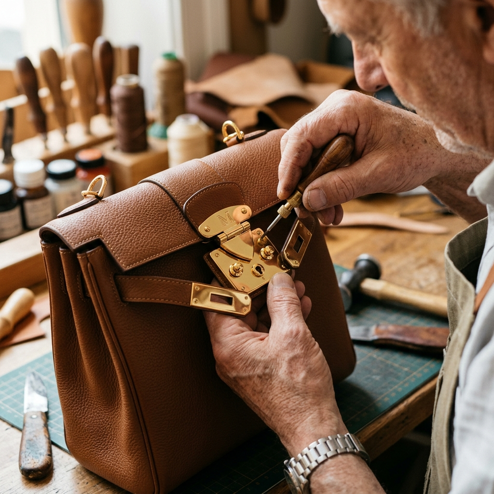
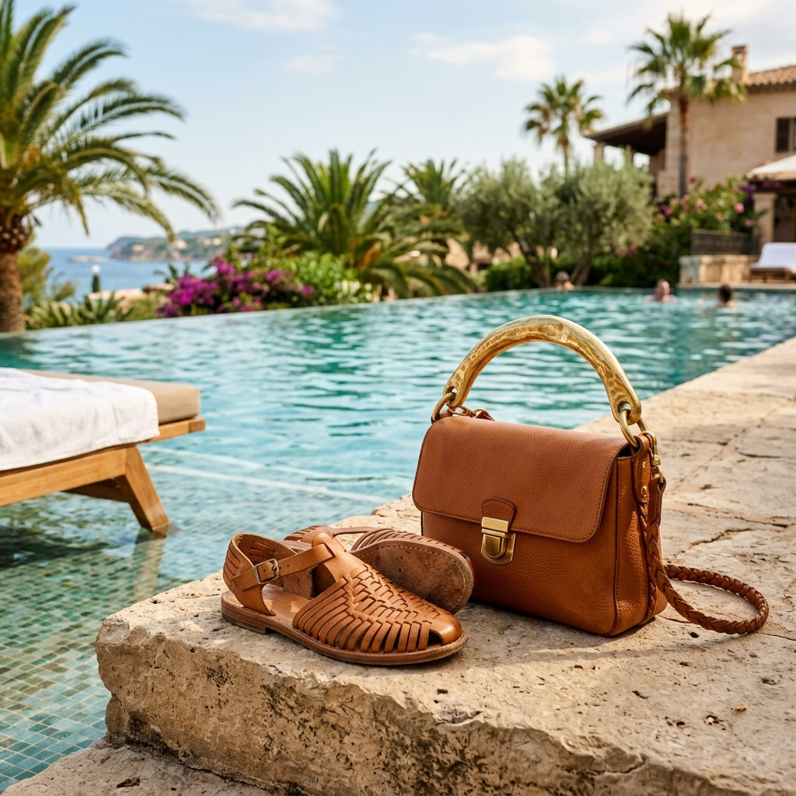
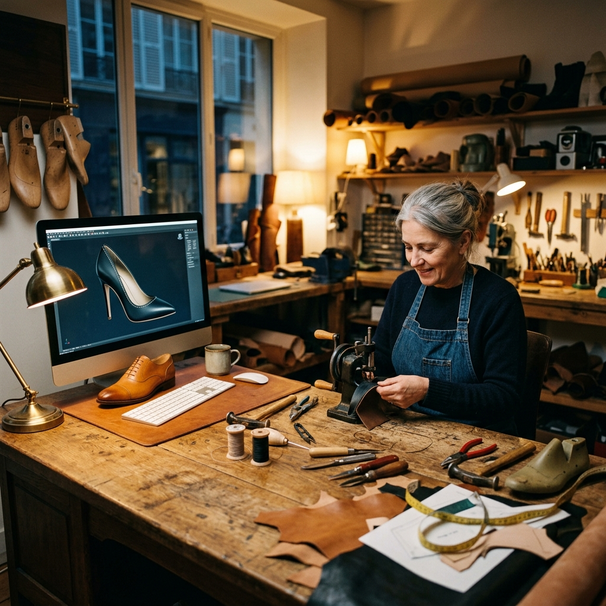
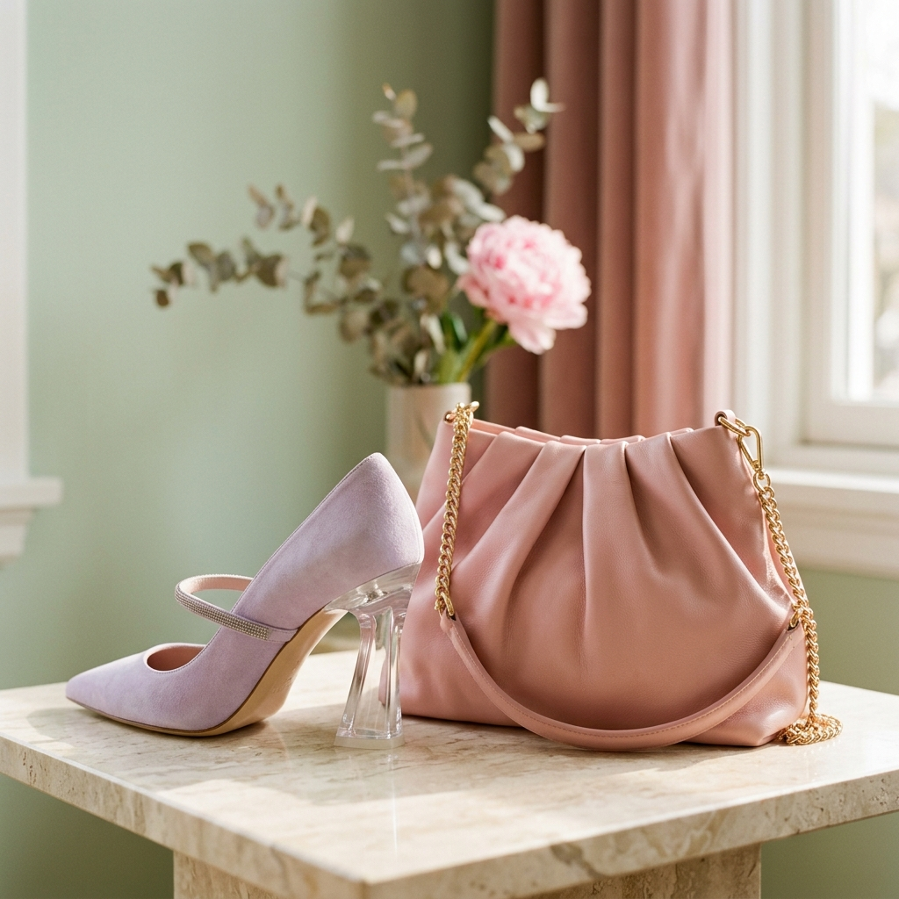
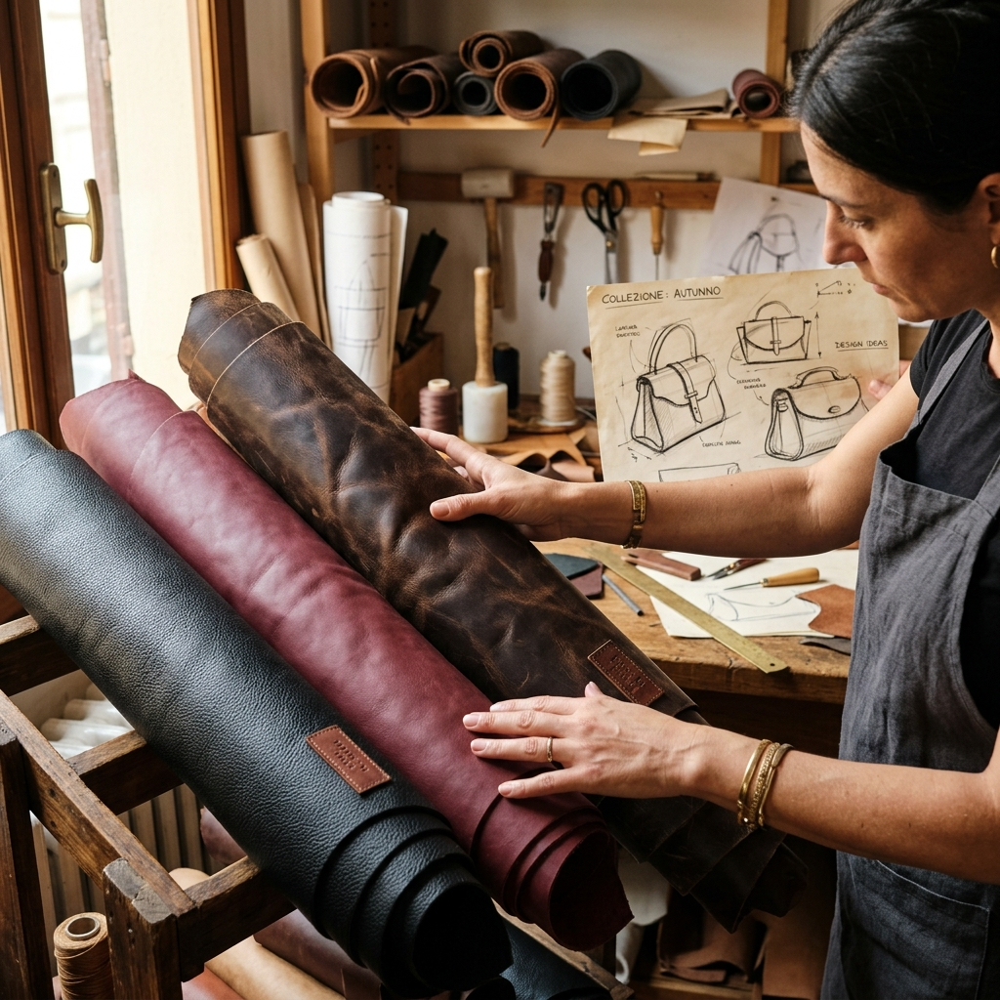
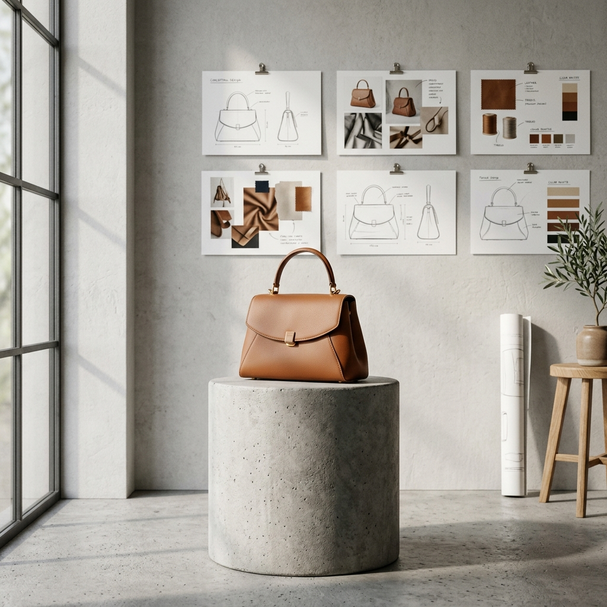
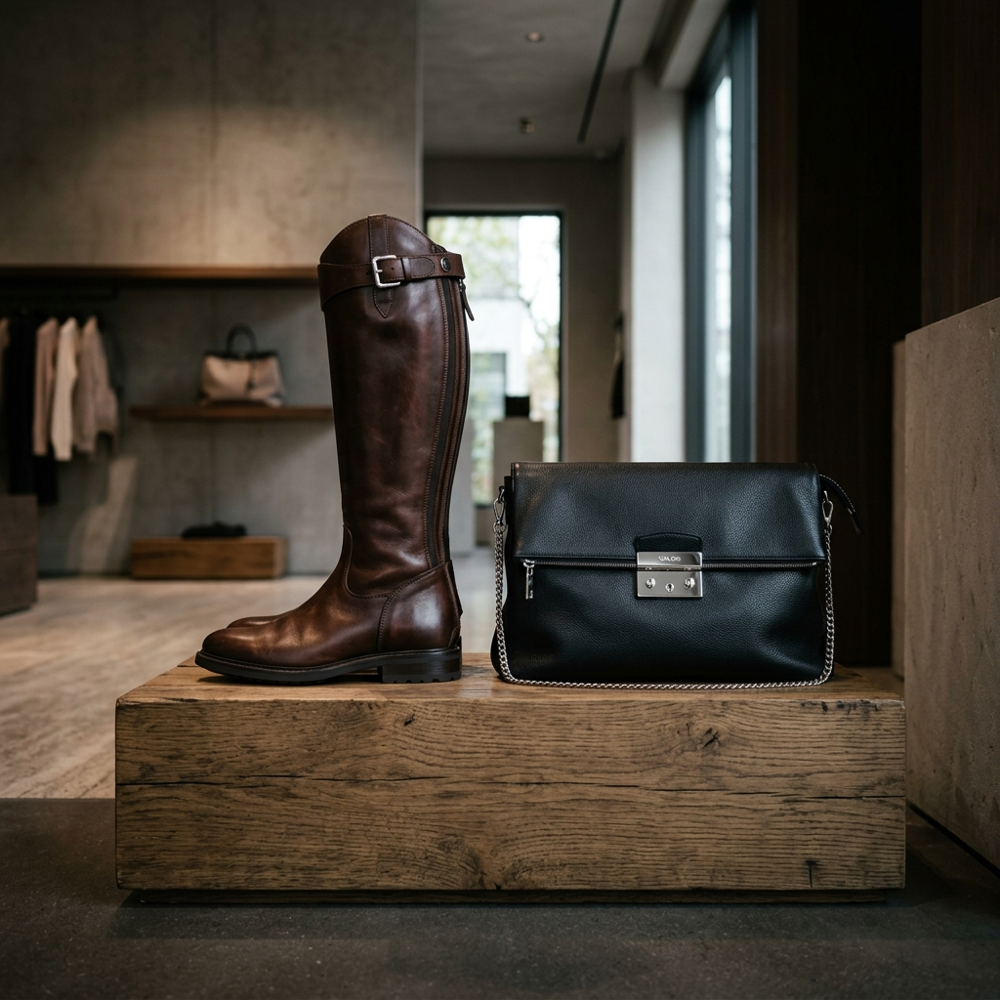
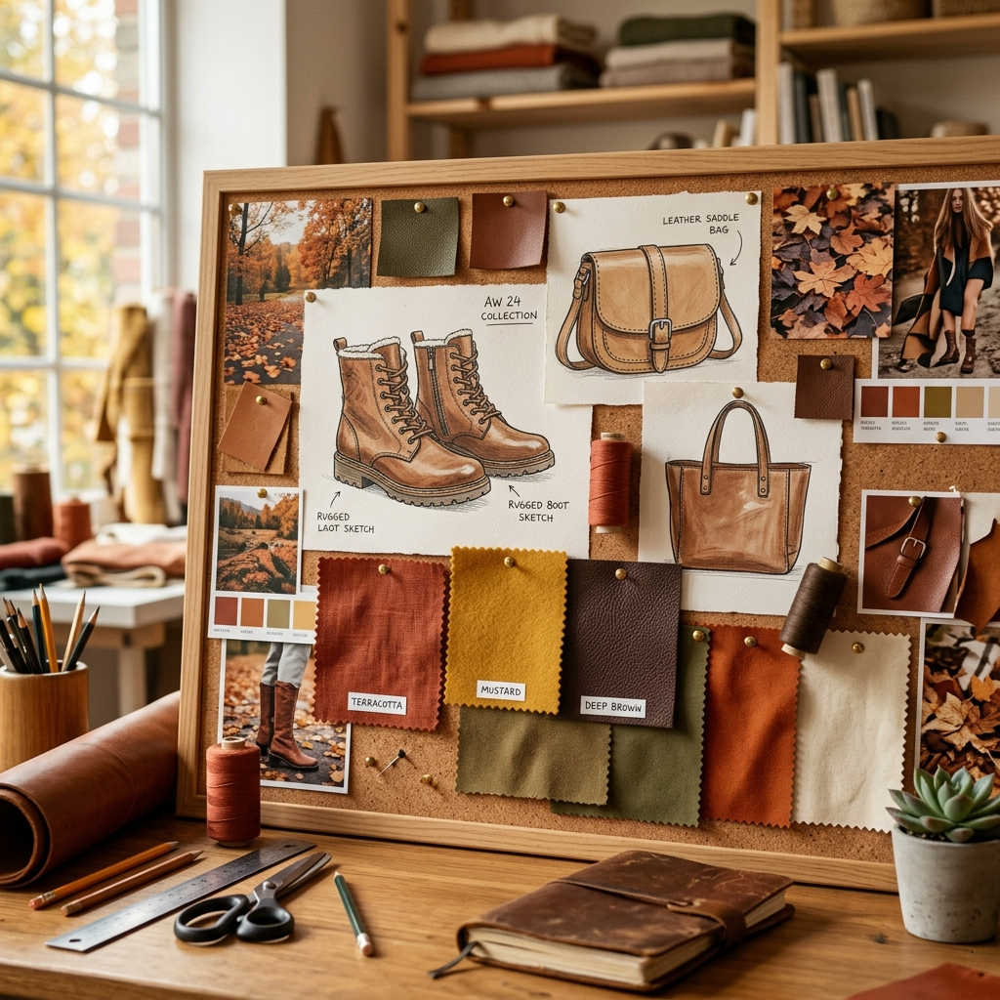

Functional Jewels: The Art of Hardware in Leather Goods
How locks, buckles, and studs define the character of a luxury handbag. The union between industrial micro-casting and artisanal galvanic finishes.
Read article →Thoughts, visions, and insights from our studio. We share how we blend artisanal care with industrial engineering precision.

How locks, buckles, and studs define the character of a luxury handbag. The union between industrial micro-casting and artisanal galvanic finishes.
Read article →
Our forecasts on summer silhouettes: the rediscovery of hand-woven sandals and resort bags enriched with sculptural brass details.
Read article →
Discover how our studio blends three-dimensional CAD modeling with traditional shoemaking techniques to create structurally flawless heels and lasts.
Read article →
A preview look at next spring: transparent acrylic heels and draped bags with fluid volumes and pastel hues.
Read article →
The journey in search of the perfect raw material. From sensory analysis to technical resistance in the workshops of our footwear districts.
Read article →
An analysis of how eclectic design influences the geometric shapes of luxury leather goods, creating iconic and timeless products.
Read article →
Our forecasts for the cold season: structured riding boots and soft nappa clutches with geometric metallic closures.
Read article →
Style forecasts for autumn: sharp square-toe shapes and structured shoulder bags in leather and suede, dominated by warm forest colors.
Read article →In the luxury footwear sector, the distance separating a beautiful paper sketch from a perfectly fitting and industrially reproducible shoe is bridged by a discipline as complex as it is fascinating: product engineering.
Since 1990, Studio Eclettica has operated exactly in this middle space. Our mission is not just to draw elegant lines, but to make them physically stable, comfortable, and producible. Today, this delicate balance between Italian craftsmanship and industrial precision finds its maximum expression in the integration of modern 3D CAD modeling software.
"A shoe is a miniature architecture. It must support the weight of the body in motion while respecting extreme aesthetic proportions."
Traditionally, developing a new last or heel required numerous physical prototyping cycles, with constant manual testing and shaving. While maintaining an indissoluble bond with the manual sensitivity of the pattern maker, the introduction of 3D modeling today allows us to simulate the distribution of forces, calculate precisely the thickness of internal metal reinforcements (the steel shanks inside heels), and correct imperfections before milling the first prototype.
This approach drastically reduces development times and material waste, offering international fashion brands a fast, precise, and excellence-oriented partner.
The 3D engineered shoe translates into files ready for mass industrial production, ensuring that the style and fit approved in our studio remain unaltered throughout the production chain, regardless of the scale chosen by the client.
Every exclusive footwear or handbag collection starts long before the cutting phase: it begins with the sensory and technical analysis of the raw material. Selecting leather is an ancient art that requires a trained eye, sensitive hands, and a deep knowledge of the chemical and physical tanning processes.
Operating in close contact with the three main Italian footwear districts (Milan, Riviera del Brenta, and Fermo), Studio Eclettica has developed a capillary network of partnerships with the best historical tanneries in the country. This allows us to source materials that are not only aesthetically extraordinary, but equipped with the physical characteristics necessary to support the most complex processes.
"No material responds to time and shape like genuine leather. Each texture tells a story of territory and craftsmanship."
When designing a bag or shoe, we consider the mechanical properties of the leather: elasticity, behavior under tension, reaction to dyes, and daily wear resistance. A soft and full leather like full-grain calfskin is ideal for soft bags and wrapping footwear, while thicker or vegetable-tanned leathers are preferred for rigid geometric structures or durable soles.
In our design studio, we support designers in choosing the perfect combination of model and material, preventing costly errors during sampling and industrialization.
The contemporary bag has now transcended its original definition of a purely functional accessory to become a travel sculpture, a statement of style, and portable architecture. But how do you create a piece capable of standing out in the saturated global luxury market?
For Studio Eclettica, the answer lies in our very name: eclecticism. It means not settling on pre-established aesthetic codes, but contaminating avant-garde design with historical references, rationalist architectures, and details from traditional high craftsmanship.
"Designing a bag means sculpting an empty volume. The real challenge is making technical complexity invisible to leave room only for the beauty of the silhouette."
Our creative process always starts with the study of volumes in space. We draw clean and essential silhouettes, but we study their ergonomics internally: the balance of weights, the positioning of handles, the smoothness of zippers, and the solidity of metals.
By combining our style and engineering divisions, we eliminate superfluous seams and optimize paper patterns to maximize the aesthetic yield of the leather, creating bags designed to last and become true design icons.
As the warm season approaches, our style studio outlines the forecasts and trends that will dominate Summer 2026. Our stylistic research points to a strong return to organic and material-inspired processes, where craftsmanship becomes the decorative element itself.
We predict that next summer's sandals will abandon rigid profiles in favor of soft weaves in kidskin and natural calfskin, mounted on flexible soles. It is a chic reinterpretation of the resort footwear concept, designed to combine absolute comfort and high-fashion aesthetics.
"Summer shoes must evoke a sense of freedom and lightness. Hand weaving is not just a technique, but a visual signature celebrating the artisan's time."
On the leather goods front, the key trend we anticipated in our moodboards is the integration of sculptural metal handles in satin or polished brass. These elements, resembling small geometric sculptures, transform shoulder bags and clutches into evening jewels.
The dominant colors we predict for summer include warm earth tones such as ochre, sand, and natural tan, paired with a strong presence of optical white.
While winter cold still wraps our workshops, the style boards for Spring 2026 are already defined. Our style forecasts point to a strong push toward visual lightness, material transparency, and the deconstruction of traditional shapes.
Next spring's footwear will feature sculptural heels made of transparent acrylic or colored resins. These design elements lift the shoe, giving an aerial floating effect, while ensuring structural stability thanks to the internal engineering of the metal shank.
"Transparency deceives the eye and lightens the step. We want the footwear to appear almost suspended, combining polymer innovation and classic elegance."
Regarding bags, our forecast focuses on the concept of draping. We predict the success of drawstring bags and shoulder bags made of extra-fine nappa and light suede, worked to fold and adapt softly to body movements, eliminating linings and rigid structures.
The spring color palette we selected for our projects focuses on desaturated pastels: sage green, powder pink, and wisteria, balanced by light gold hardware and satin finishes.
In view of the cold season 2025-2026, Studio Eclettica outlines design guidelines for winter collections of bags and footwear. Our style forecasts converge on a functional but rigorous aesthetic, combining protection from elements and formal elegance.
In the footwear sector, we predict the urban consecration of the riding boot. Our designs feature high, semi-rigid shafts in polished brushed calfskin, paired with thick leather soles with non-slip inserts. It is a classic silhouette combining technical rigor and timeless style.
"Winter boots are a barrier against the cold, but their design must maintain slender proportions. We work on leather thickness to ensure structure without weighing down the leg."
For bags, our forecast points to soft clutches with oversized proportions, designed to be carried under the arm. These models combine the softness of padded leather or shearling with contrasting silver metal details and polished geometric closures.
Winter colors will include deep black, burgundy, and dark brown, ideal for sophisticated pairings with classic winter outerwear.
In the heart of summer, our style and technical studio is already completing the development of models for Autumn 2025. The trends we predict for the autumn season mark a decisive return to a warm and material aesthetic, linked to the colors and textures of nature.
Our forecasts feature footwear characterized by sharp square-toe shapes and stable, geometric column heels. This structure fits high ankle boots and thick loafers perfectly, made of pebble leather or waxed suede to withstand the first rainy days.
"Autumn requires rich textures that stimulate touch. Suede and natural leather age beautifully, enhancing the passing of the seasons."
For leather goods, our forecast focuses on saddle bags and structured geometric shoulder bags. The color palette is entirely inspired by the autumn undergrowth: rust, mustard, olive green, and burnt brown, embellished with hand-stitched details using thick contrasting yarns.
In the universe of luxury accessories, hardware — namely locks, zippers, clasps, studs, and buckles — represents much more than an ornamental detail. These components are the true keepers of the object's functionality, the hinges on which the entire user experience rests. In our studio, we consider these details to be functional jewels.
Designing an exclusive metal accessory requires a constant dialogue between mechanical engineering and fine craftsmanship. Each lock must open with a precise and satisfying sound (the acoustic "click" of luxury), withstand thousands of cycles of use, and maintain its brilliance over time.
"Hardware is the most frequent physical contact point between the user and the bag. That is where mechanical engineering precision transforms into sensory pleasure."
The production process of these components is fascinating. We start with three-dimensional design in our CAD software, defining thicknesses, tolerances, and internal housings. Next, we move to the micro-casting of zamak or brass, injection molding the raw parts.
The secret of luxury, however, lies in the finish. Each piece is tumbled and hand-polished to eliminate any imperfection. Finally, the components undergo galvanic baths to deposit thin layers of noble metals (such as thick gold, palladium, or ruthenium), ensuring an exceptional barrier against oxidation and scratches.
A crucial aspect of engineering concerns mounting on the bag. The metal must not cut the leather fibers or deform it under the weight of the contents. For this reason, each bag is reinforced internally with salpa, leather board, or microfiber cores at the anchoring points of screws and rivets.